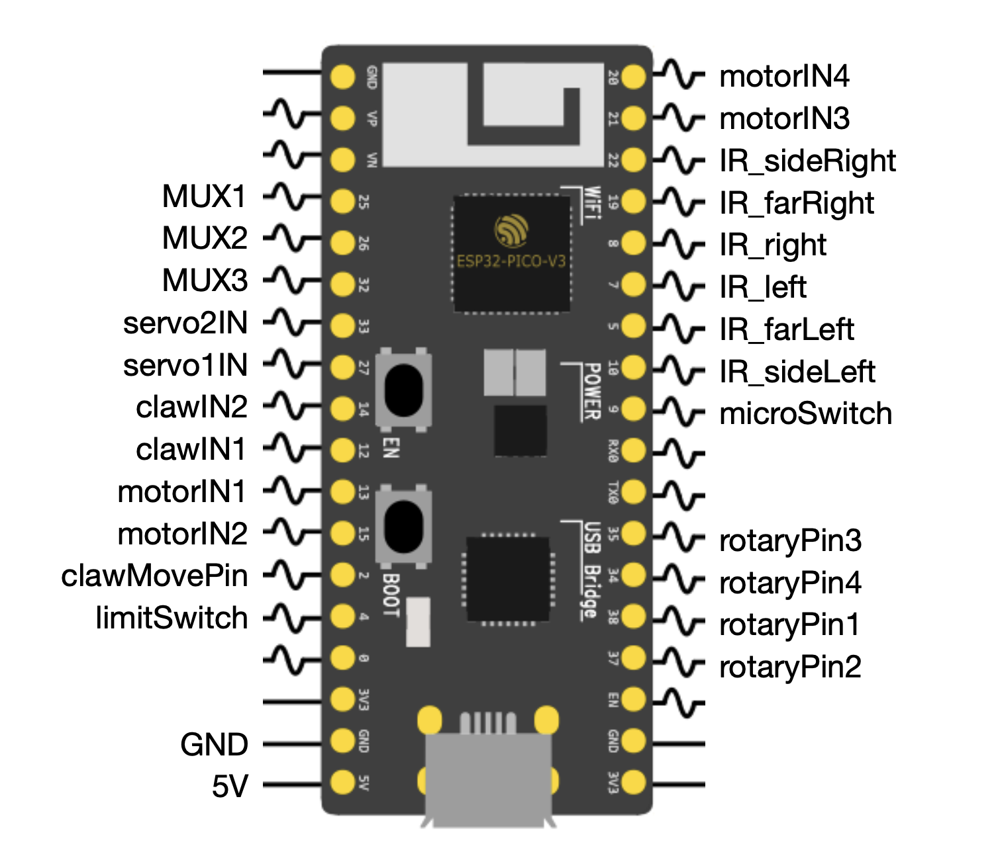
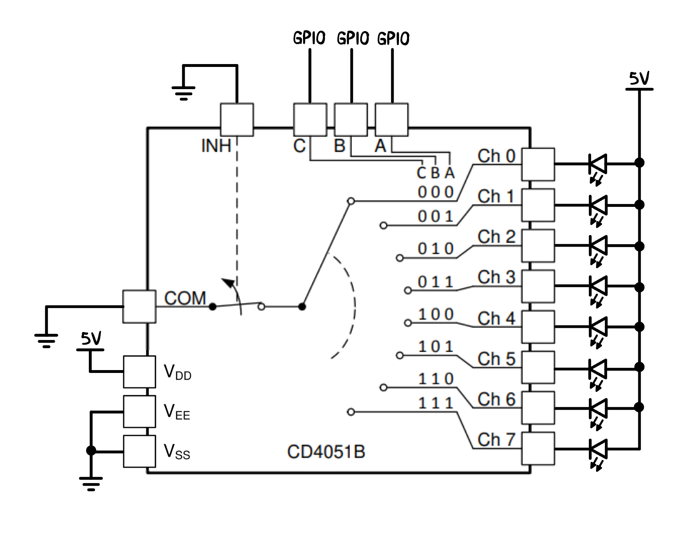

The MCU we chose for this project was an ESP32 Pico V3. Among all the MCUs available to us, it had the most PWM channels as well as the best options for reliable wireless communication. It was also over-specced in clock rate and flash memory which allowed us more freedom in software.
We used a dual H-bridge powered by an LT1161 gate driver to power the DC motors. We had two dual H-bridge PCBs on each robot. One was used for both drive wheels and the other was used for the motor that drove the lead screw and controlled the elevation of the claw.
TCRT5000 reflectance sensors were used to sense black tape on the competition surface which was essential to navigation. We used four sensors on the front of the robot to follow the tape and one was placed on each side of the robot to detect the tape in front of the counter stations which would signal when to turn (see the Competition Layout on the Home page). Each sensor was accompanied by a PCB with a potentiometer that allowed us to control the LOW/HIGH threshold depending on our desired sensitivity to tape sensing and the ambient lighting.
Precise position control was important for surface navigation, so we needed accurate rotary encoding. We used a 1:1 gear ratio from the motor shaft to a rotary encoder located above to accurately record the motor movement. A rotary debouncer circuit with a potentiometer to control the threshold resistance was used to ensure that the encoder was correctly counting the number of ticks. The encoders we used had 24 clicks per revolution, so by attaching interrupts on rising and falling edges, we got a count of 96 per revolution.
Due to the limited number of GPIO pins on the MCU, we used an 8:1 multiplexer to allow for more I/O signals. The multiplexer is only capable of connecting one channel at a time, so we switched through them fast enough to power our digital outputs. We had planned to use the multiplexer to read the IR reflectance signals as well, but it was unnecessary since we ended up with the exact number of pins we needed.
Each robot had three 8V/550mAh LiPo batteries for controlling our logic circuits and one 12V/1.3Ah LiPo battery for driving the motors. Each battery was connected to a DC-DC buck converter with a potentiometer for adjustable voltage output as well as a 1μF capacitor to remove noise from the line. There were also switches mounted on the chassis to turn on and off each battery.